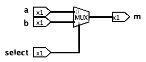

Module 02: Logical Equivalences
Conditional
The conditional (or implication) is a key logical operator, although it does not have a specific logic gate describing it. In logic, which may differ from natural languages such as English, the interpretation of the conditional is always the same, not allowing ambiguity.
In the conditional (a -> b), a is called the hypothesis (or antecedent), and b is called the conclusion (or consequent). Furthermore, we define that a is a sufficient condition for b and b is a necessary condition for a.
In logic, "if a then b" means that if a is true, then b has to be true; and if a is false, the implication is always true, regardless of the value of b.
| a | b | (a → b) |
| F | F | T |
| F | T | T |
| T | F | F |
| T | T | T |
This concept can feel counterintuitive, especially when examining the first two rows of the truth table, but in formal logic, an implication is considered false only when the promise it represents is broken, that is, when the hypothesis is true but the conclusion is false.
Imagine you're interviewing for a job, and your potential employer tells you, "If you show up for work on Monday morning, then you will get the job." In this statement, the hypothesis is that you show up on Monday, and the conclusion is that you get the job. From a logical perspective, we evaluate the truth of this implication by considering whether or not the promise has been upheld in each possible scenario.
If you do show up on Monday and receive the job, the promise has been fulfilled. Both the hypothesis and the conclusion are true, so the implication holds. However, if you show up on Monday but don't get the job, the promise has clearly been broken. Here, the hypothesis is true while the conclusion is false, which makes the implication false according to the rules of logic. This is the third row of the truth table above, the only one where the statement's truth value is false.
Now consider the situation in which you don't show up on Monday. In that case, the hypothesis is false, and because the original promise said nothing about what happens if you fail to appear, the promise hasn't been broken. No one promised you that you would not get the job if you did not show up on Monday, perhaps fortunately! Regardless of whether you get the job or not, the implication is still considered logically true. This scenario, where a false hypothesis leads to a true implication, is an example of what is known as a vacuous truth.
Although such statements may feel awkward or even misleading in everyday language, they are consistent and valid in formal logic. For instance, the sentence "If 2 is odd, then 4 is prime" sounds incorrect in natural speech, yet in logical terms it is true, simply because the hypothesis "2 is odd" is false. This doesn't make English "wrong" or logic "right", but we do require clarity and consistency in logic!
The following are different options for expressing (a → b) in English:
- if a then b
- a implies b
- a only if b
- b if a
Another natural form to express an implication is saying "b unless a," which does not mean the regular implication, since it adds a negation to the hypothesis: (~a → b). For example, the sentence "The plants will die unless you water them" means the same as "If you don't water the plants, then they will die". In this case, the hypothesis is
There are no gates to represent the implication (a → b) operation in a circuit, but since it is equivalent to (~a v b), it can be described in a circuit using an OR gate and a NOT gate. Furthermore, it is not possible to negate an implication using its original format, so the negation of an implication is calculated by using its definition followed by De Morgan's law:
~(a → b) ≡ ~(~a ⋁ b) ≡ (~~a ⋀ ~b) ≡ (a ⋀ ~b)
Applying the negation to the hypothesis and the conclusion, (~a → ~b) is not equivalent to the negation, and it is called the inverse. (This is like the promise that was not made above that "If you do not show up on Monday, you will not get the job.")
Changing the order of the hypothesis and conclusion (b → a) is not equivalent to the negation either, and it is called the converse.
Applying the negation to the hypothesis and the conclusion and changing their order, (~b → ~a) is not equivalent to the negation as well, but it is equivalent to the original implication, and it is called the contrapositive.
(a → b) ≡ (~b → ~a)
Notice that the inverse and the converse are contrapositives of each other. In other words, neither the inverse nor the converse is logically equivalent to the original statement. However, the inverse and the converse are logically equivalent to each other.
Biconditional
The biconditional, represented by the double arrow symbol (a ↔ b), evaluates whether two inputs have the same truth value. Because it checks for equality between truth values, it shares the same truth table as the XNOR gate. Although biconditional statements are not frequently used in everyday language, they are formally expressed with the phrase "if and only if," often abbreviated as "iff". In natural language, people often use conditional expressions to imply a biconditional relationship, since natural languages are ambiguous. However, in formal logic, ambiguity is not accepted so this confusion cannot occur. It's important to note that "if and only if" indicates a true biconditional, while "only if" by itself expresses just a conditional relationship.
| a | b | (a ↔ b) |
| F | F | T |
| F | T | F |
| T | F | F |
| T | T | T |
In this case, a is a necessary and sufficient condition for b, which means that both (a → b) and (b → a) have to be true at the same time.
(a ↔ b) ≡ (a → b) ⋀ (b → a)
Multiplexers
A multiplexer (MUX) is a circuit component that selects between two inputs based on a third selector input. It will output a if select is false and b if select is true.
| a | b | select | m |
| F | F | F | F |
| F | F | T | F |
| F | T | F | F |
| F | T | T | T |
| T | F | F | T |
| T | F | T | F |
| T | T | F | T |
| T | T | T | T |
Although not a basic logic gate, the multiplexer is represented as the following component in a circuit, which is implemented using AND, OR, and NOT gates.

We can use a multiplexer to choose between inputs. For example, we could implement the following code:
if a == b:
return b
else:
return a
We can use an XNOR gate to determine whether the values of a and b are the same. The output of the XNOR gate can then be connected to the select input of a multiplexer. When the XNOR output is false, indicating that a and b are different, the multiplexer selects the top input (in this case, a). When the XNOR output is true, meaning a and b are equal, the multiplexer selects the bottom input (in this case, b). In this way, the multiplexer uses the result of the XNOR comparison to choose between the two inputs.
Equivalence Laws
Two statements are considered logically equivalent if and only if they produce the same truth table, that is, they yield identical truth values for all possible combinations of inputs. One straightforward method to verify logical equivalence is to construct the truth table for each statement and compare the results. However, this approach can become impractical as the number of input variables increases; for instance, a truth table with six inputs contains 64 rows.
A more efficient and elegant method is to transform one statement into the other using a series of equivalence laws. This approach avoids exhaustive enumeration and relies on logical identities to simplify or rewrite expressions step by step.
A proof in logic is not just a sequence of transformations; it is also a form of communication. When constructing a proof that two statements are logically equivalent, our goal is not only to arrive at the correct result but also to ensure that others can clearly follow and understand each step. Therefore, it is essential to proceed in small, well-justified steps, each of which applies a recognized equivalence law. Avoid relying on transformations that may seem obvious to you but are not easily recognized by others unless they are explicitly supported by a named rule.
Like any communication, the appropriate level of abstraction depends on your audience, the community you are communicating within. In this course, we will establish our particular community's expectations; communicating outside of those may make a proof incorrect, even if it would be interpreted as entirely correct in another community.
For this course, the following list of equivalence laws should be used as the basis for all such transformations:
|
Identity (I) (p ⋀ T) ≡ p (p ⋁ F) ≡ p |
Universal Bound (UB) (p ⋀ F) ≡ F (p ⋁ T) ≡ T |
Idempotent (ID) (p ⋀ p) ≡ p (p ⋁ p) ≡ p |
|
Commutative (COM) (p ⋀ q) ≡ (q ⋀ p) (p ⋁ q) ≡ (q ⋁ p) |
Associative (ASS) (p ⋀ (q ⋀ r)) ≡ ((p ⋀ q) ⋀ r) (p ⋁ (q ⋁ r)) ≡ ((p ⋁ q) ⋁ r) |
Distributive (DIST) (p ⋁ (q ⋀ r)) ≡ ((p ⋁ q) ⋀ (p ⋁ r)) (p ⋀ (q ⋁ r)) ≡ ((p ⋀ q) ⋁ (p ⋀ r)) |
|
Absorption (ABS) (p ⋁ (p ⋀ q)) ≡ p (p ⋀ (p ⋁ q)) ≡ p |
Negation (NEG) (p ⋀ ~p) ≡ F (p ⋁ ~p) ≡ T |
Double Negation (DNEG) ~~p ≡ p |
|
Complement (CP) ~T ≡ F ~F ≡ T |
DeMorgan's (DM) ~(p ⋀ q) ≡ (~p ⋁ ~q) ~(p ⋁ q) ≡ (~p ⋀ ~q) |
Definition of Exclusive OR (XOR) (p ⊕ q) ≡ ((p ⋁ q) ⋀ ~(p ⋀ q)) (p ⊕ q) ≡ ((p ⋀ ~q) ⋁ (~p ⋀ q)) |
|
Definition of Implication (IMP) (p → q) ≡ (~p ⋁ q) |
Contrapositive (CONTP) (p → q) ≡ (~q → ~p) |
Definition of Biconditional (BIC) (p ↔ q) ≡ ((p → q) ⋀ (q → p)) (p ↔ q) ≡ ~(p ⊕ q) |
You don't need to memorize this list; a formula sheet will be provided to you at all assessments during the course.
Having agreed on particular laws to use, it's important that application of our laws will always generate equivalent statements. What justifies an equivalence law? It must be an equivalance itself; you can check using a truth table that each of these laws is indeed an equivalence.
Let's use these laws to prove that ((b → c) ⋀ (a → c) ≡ ((a ⋁ b) → c)
We begin by selecting one of the expressions as our starting point, and our goal is to systematically transform it into the other expression. This transformation must be done step by step, using one equivalence law at a time. At each step, we must clearly indicate which law is being applied and identify the specific parts of the expression that correspond to the variables (such as p, q, or r) in the law. It's crucial that this mapping is exact; each instance of the law must match the structure of the expression being rewritten.
Keep in mind that all of the listed laws can be applied in either direction, depending on what the transformation requires. This ensures flexibility in the proof process while still maintaining clarity and logical rigor. In addition, since these are equivalence laws that can be applied in either direction (that "replace equals for equals"), we can apply them to a complete subexpression (a part in parentheses) of the statement we're operating on, and the statement retains its original meaning.
| ((a v b) -> c) | ||||
| (~(a v b) v c) | Definition of Implication | p = (a v b) | q = c | |
| ((~a ^ ~b) v c) | De Morgan's Law | p = a | q = b | |
| ((~a v c) ^ (~b v c)) | Distribution | p = ~a | q = ~b | r = c |
| ((a -> c) ^ (~b v c)) | Definition of Implication | p = a | q = c | |
| ((a -> c) ^ (b -> c)) | Definition of Implication | p = b | q = c | |
| ((b -> c) ^ (a -> c)) | Commutative | p = (b -> c) | q = (a -> c) |
There is no fixed algorithm or set of steps to follow when constructing a proof like the one above; practicing is the best way to improve your skills. However, becoming familiar with the laws and the steps used in the example is an essential first step.
Read More
Epp, Susanna. Discrete Mathematics with Applications.
5th edition: 2.2
4th edition: 2.2
3rd edition: 1.2